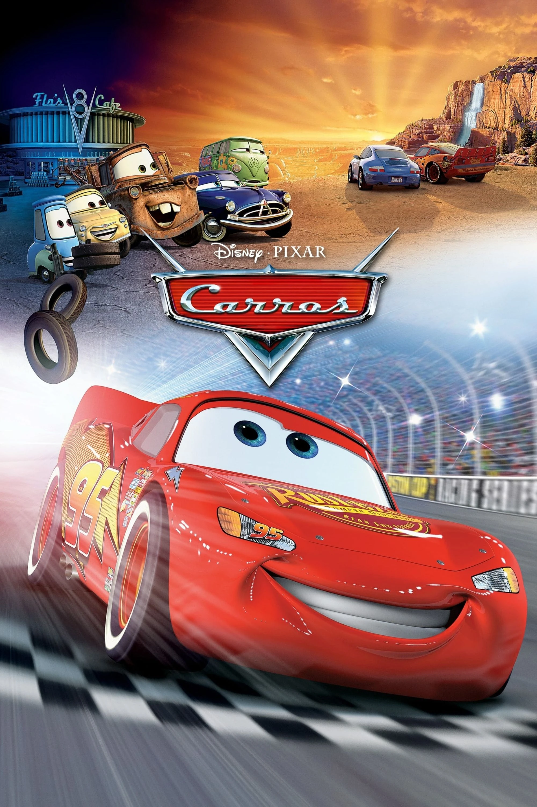
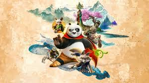
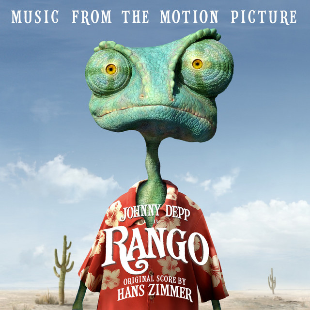

Os Carros

A franquia "Carros" gira em torno de relíquias automotivas em um mundo habitado por veículos antropomórficos. O primeiro filme apresenta Relâmpago McQueen, um carro de corrida que, após um acidente, é forçado a parar em uma cidade chamada Radiator Springs. Lá, ele aprende sobre amizade, humildade e a importância da comunidade. O segundo filme, "Carros 2", leva McQueen e seus amigos em uma aventura internacional, misturando corridas com espionagem.
Gato de botas
.jpg)
Antes de conhecer Shrek e sua turma, Gato de Botas vive uma grande aventura ao lado de Humpty Dumpty e Kitty Pata Mansa. Dispostos a roubar os feijões mágicos do casal fora da lei Jack e Jill, o trio quer mesmo é conseguir a famosa gansa que bota ovos de ouro. Porém, algumas coisas não estavam nos planos, e Gato vai descobrir, meio atrasado, que tem um grande problema pela frente para conseguir limpar o que ficou para trás: a sua honra.
Kung Fu Panda

Po é um panda que trabalha na loja de macarrão da sua família e sonha em transformar-se em um mestre de kung fu. Seu sonho se torna realidade quando, inesperadamente, ele deve cumprir uma profecia antiga e estudar a arte marcial com seus ídolos, os Cinco Furiosos. Po precisa de toda a sabedoria, força e habilidade que conseguir reunir para proteger seu povo de um leopardo da neve malvado.
Rango

Um camaleão que viveu como um animal de estimação se encontra em uma crise de identidade. Rango se questiona sobre como se destacar quando é de sua natureza se camuflar. Acidentalmente, ele acaba em uma cidade de fronteira chamada Dirt e dá o primeiro passo em direção à transformação se tornando xerife. Embora inicialmente ele apenas tenha encenado, uma série de situações emocionantes e encontros escandalosos obrigam Rango a se tornar um verdadeiro herói.